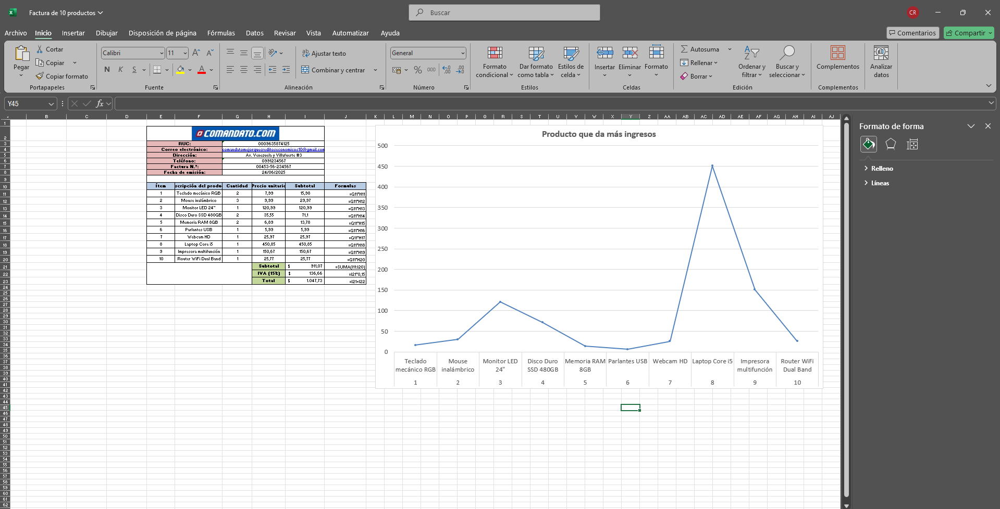

1. Concepto de Aplicaciones Ofimáticas
Las aplicaciones ofimáticas son programas informáticos diseñados para realizar tareas de oficina, como redactar documentos, crear hojas de cálculo, presentaciones o gestionar bases de datos. Existen versiones locales (instaladas en el computador) y versiones en línea (accesibles desde Internet).
- Locales: Microsoft Office, LibreOffice, WPS Office.
- En línea: Google Workspace, Microsoft 365, Zoho Office.
- Ventajas: productividad, organización, colaboración, almacenamiento.

2. Procesadores de Texto
Son aplicaciones que permiten crear, editar y dar formato a documentos de texto. Se utilizan para elaborar cartas, informes, currículums, etc.
- Microsoft Word: el más conocido, ofrece muchas herramientas de formato y revisión.
- Google Docs: versión en línea con colaboración en tiempo real.
- Funciones clave: insertar imágenes, encabezados, tablas, hipervínculos.
3. Presentaciones Digitales
Permiten mostrar información visualmente de forma atractiva mediante diapositivas. Son muy usadas en exposiciones, clases, negocios, y conferencias.
- Microsoft PowerPoint: opción robusta con efectos, transiciones y multimedia.
- Google Slides: herramienta colaborativa en la nube.
- Elementos comunes: texto, imágenes, videos, gráficos, animaciones.

4. Almacenamiento en la Nube
El almacenamiento en la nube permite guardar y acceder a archivos desde cualquier dispositivo con conexión a Internet. Esto facilita la colaboración y seguridad de los datos.
- Google Drive: 15 GB gratuitos para archivos, fotos y documentos.
- OneDrive: integrado con Windows y Microsoft Office.
- Dropbox: servicio popular con sincronización multiplataforma.
Las copias automáticas, el control de versiones y los accesos compartidos son algunas de sus funciones más útiles.

5. Microsoft Excel
Excel es una hoja de cálculo muy poderosa que permite realizar desde operaciones básicas hasta análisis avanzados de datos. Es una herramienta esencial tanto en el ámbito académico como profesional.
- Funciones básicas: SUMA, PROMEDIO, MAX, MIN.
- Gráficos: columnas, líneas, pastel, área, entre otros.
- Tablas dinámicas: resumen interactivo de grandes volúmenes de datos.
- Fórmulas avanzadas: BUSCARV, SI, CONCATENAR, CONTAR.SI.
- Automatización: mediante macros y programación con VBA.
Excel no solo se usa en matemáticas o estadísticas, también en finanzas, inventarios, horarios, análisis de ventas y más.
6. Ejercicio de Practica
Excel, tambien conocido como hoja de cálculo, es una herramienta para realizar cálculos, análisis de datos y visualización. Permite organizar datos para una empresa, donde consiste en crear una hoja de cálculo que contenga información de ventas, inventarios o cualquier otro dato relevante.
- Funciones básicas: SUMA, PROMEDIO, MAX, MIN.
- Gráficos: columnas, líneas, pastel, área, entre otros.
- Tablas dinámicas: resumen interactivo de grandes volúmenes de datos.
- Fórmulas avanzadas: BUSCARV, SI, CONCATENAR, CONTAR.SI.
- Automatización: mediante macros y programación con VBA.
Excel no solo se usa en matemáticas o estadísticas, también en finanzas, inventarios, horarios, análisis de ventas y más, aqui un ejercicio de practica para una empresa sobre factura, inventario y nomina de empleado.
